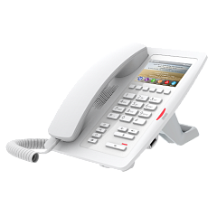

Fanvil H5 (белый)
Цена носит информационный характер — актуальную стоимость и наличие уточняйте у менеджера.
Fanvil H5 — это высококачественный гостиничный SIP-телефон с простым понятным интерфейсом и поддержкой PoE. Устройство соответствует международным стандартам и обладает полным набором необходимых функций. Старшая модель линейки оснащена 6 программируемыми кнопками и 3,5' LCD-экраном, на который заносятся установленные на каждую из кнопок действия без использования бумажных носителей. Поддержка нескольких языков в таком случае важна для международных отелей. Модель оснащена USB-портом для зарядки мобильных телефонов и других устройств. Все это делает Fanvil H5 идеальным решением для гостиниц высокого класса и для номеров класса Lux в любых отелях.
Поставляется в двух вариантах цвета — белом и чёрном.
В соответствии с законодательством РФ, установка телефонного аппарата в номере обязательна в гостиницах от 2 звезд и выше с количеством номеров более 15. Вне зависимости от размера и "звездности" отеля телефонный аппарат обязан быть установлен на прикроватной тумбочке в номерах категорий "студия", "джуниор сюит", "люкс", "апартаменты", "сюит", а также в номерах первой категории в отелях от 3 звезд и выше. В номерах "люкс", "апартамент" и "сюит" телефон должен быть предусмотрен в каждой комнате.
Гарантия 12 месяцев.
Характеристики
Общее
- 2 SIP-аккаунта;
- Поддержка POE;
- Режим разговора: Через телефонную трубку / По громкой связи;
- Клавиши DSS;
- Дополнительный внешний источник питания;
- Индикаторная лампа;
- Цветной дисплей.
Функции вызова
- Вызов / Ответ;
- Отключение / Включение микрофона;
- Удержание / Возобновление вызова;
- Ожидание вызова;
- Слепой/Отложенный трансфер;
- Быстрый набор;
- Функция оповещения (Intercom);
- Повторный вызов;
- Голосовая почта (зависит от сервера);
- Горячая линия;
- Hot-desking.
Функции телефона
- Журналы вызовов с пропущенными вызовами / входящими вызовами / исходящими вызовами;
- Вызов без регистрации;
- Светодиодная подсветка;
- Пользовательский текст и логотип на дисплее
- Acion URL/Active URI;
- Web-dial.
Аудио
- Аудиокодек: G.711 a/u, G.723.1, G.726-32K, G.729AB, G.722;
- Эхоподавление (AEC);
- Обнаружение речевой активности (VAD);
- Генерация комфортного шума(CNG);
- Компенсация потерянных пакетов (PLC);
- Динамический джитер буфера до 300мс;
- Передача DTMF: In-band, RFC2833, SIP INFO.
Сетевые функции
- 2 порта Ethernet 10/100 Мбит/с в режиме работы Bridge;
- Режим получения IP – Статический, DHCP, PPPoE;
- Поддержка 802.1x;
- Поддержка VLAN;
- Поддержка QoS.
Протоколы
- SIP2.0 over UDP/TCP/TLS;
- RTP/RTCP/SRTP;
- STUN;
- DHCP;
- PPPoE;
- 802.1x;
- SNTP;
- FTP/TFTP;
- HTTP/HTTPS;
- TR-069.
Управление
- Автонастройка через FTP/TFTP/HTTP/HTTPS/DHCP OPT66/SIP PNP/TR069;
- Управление через WEB;
- Экспорт / Импорт конфигурационного файла;
- Обновление программного обеспечение;
- Обновление программного обеспечения;
- Поддержка Syslog.
Физические характеристики
- Цветной LCD дисплей 3.5" ;
- Клавиатура из 26 клавиш, включая:
- 6 DSS-клавиш;
- 4 Функциональные клавиши (Удержание, Трансфер вызова, Повторный набор, MWI);
- 12 Стандартных клавиш для набора номера;
- 3 Клавиши регулировки громкости: Уменьшение / Увеличение / Отключение микрофона;
- 1 Клавиша громкой связи.
- Порт RJ9 x1: Телефонная трубка x1;
- Порт RJ45 x2: Сеть x1, PC x1;
- Порт USB x1: Стандартный A, используется только для зарядки мобильного телефона;Потребляемая мощность постоянного тока: 5V / 1A;
- Потребляемая мощность: Холостой ход 1,8 Вт ~ 2,5 Вт, Пиковая мощность 3 Вт ~ 4,5 Вт Рабочая температура: 0 ~ 40 C;
- Рабочая влажность: 10~95%;
- Размеры (Д*Ш*В) 152мм*193мм*132мм